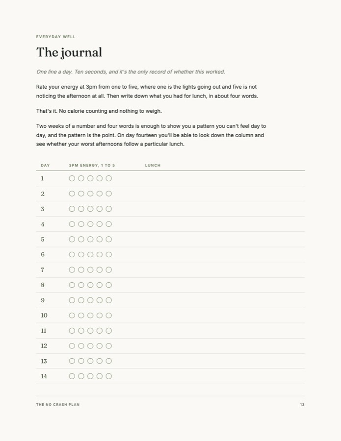
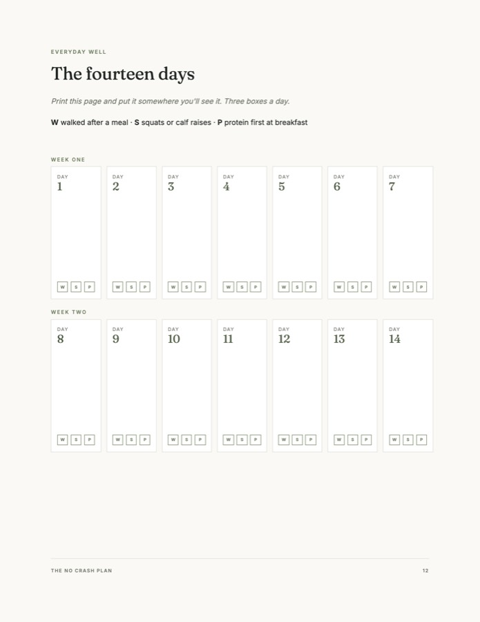
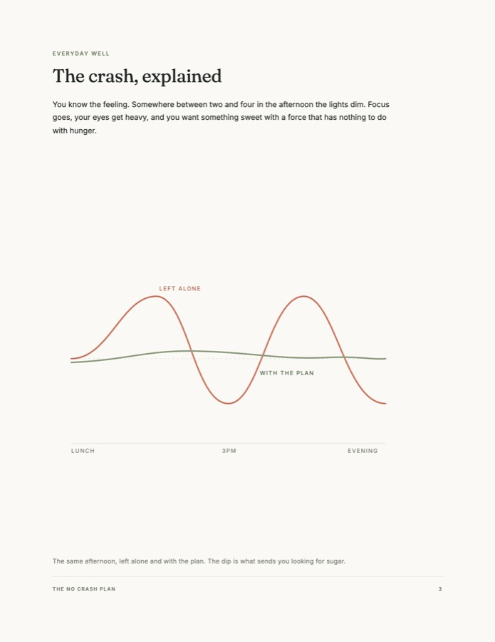
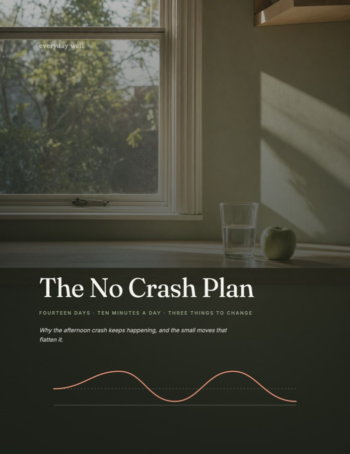

Why your energy dips after lunch, the three changes that flatten it, a snack list for home, work and the car, and a printable 14 day calendar and journal.
Free. It lands in your inbox in about a minute.
Your eyes get heavy and you read the same line three times. Whatever you were going to get done after lunch, you're not getting it done now.
You ate two hours ago, so you're not hungry. A sandwich won't do. It has to be chocolate, or a cookie, or whatever's in the cupboard.
So you have another one. It's four o'clock, that's your third cup today, and you're going to sleep badly again.
It's not a lack of willpower, it's a blood sugar dip that sends mixed hunger signals.




Nineteen pages: what's actually happening at 3pm, three changes that take about ten minutes, a snack list for home, work and the car, and two pages you print and tick off.
Free. It lands in your inbox in about a minute. It won't fix afternoons that are really a sleep or a medication problem.
Nineteen pages, a snack list, and two pages you print and tick off. Everything you need to stop losing your afternoons, and it takes about ten minutes a day.
Free. It lands in your inbox in about a minute.